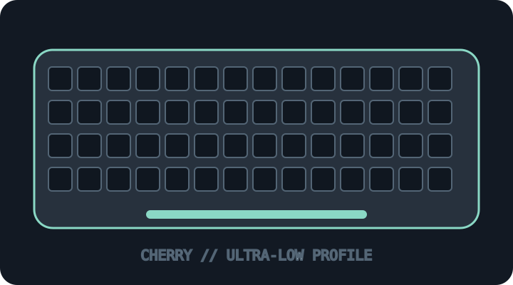

[ KEYBOARDS AND INTEGRATED POINTING DEVICES // IDENTIFIED SKU ]
CHERRY MX 10.0N RGB (G8A-25010LVBUS-2)
Ultra-low-profile full-size wired mechanical keyboard using CHERRY MX Low Profile RGB Speed switches.

MODEL IDENTIFICATION: G8A-25010LVBUS-2 — US-layout RGB configuration; verify the full regional product code on the label. This archive entry identifies a real manufacturer product/variant; physical labels and dated manuals supersede generalized family descriptions.
Model specifications
| Catalog subcategory | Keyboards and integrated pointing devices |
|---|---|
| Exact model / SKU | G8A-25010LVBUS-2 — US-layout RGB configuration; verify the full regional product code on the label. |
| Layout and key arrangement | Full-size desktop layout with numeric keypad and per-key RGB; regional keyboard layouts differ. Slim aluminum case and fold-out feet are part of the model design. |
| Switch type / mechanism | CHERRY MX Low Profile RGB SPEED linear mechanical switches. The manufacturer rates switch durability above 100 million actuations and does not describe them as hot-swappable. |
| Interface and protocol | Detachable USB-C-to-USB-A wired connection; no wireless mode. CHERRY Utility/software support depends on host OS and software release. |
| Key rollover / anti-ghosting | CHERRY lists full N-key rollover and anti-ghosting for this model. |
| External dimensions | Approximately 425 × 127 × 22 mm (width × depth × overall height); verify the exact keyboard revision and whether a source reports chassis-only height. |
| OS and host compatibility | Standard USB HID keyboard input on compatible USB hosts; Windows is the primary software/configuration target. Basic typing on macOS/Linux does not imply full CHERRY Utility feature compatibility. |
| Revision / regional caveat | MX 10.0N RGB and MX 10.0N non-RGB/other regional layouts are not interchangeable records. Regional part numbers, supplied cable, layout, firmware and utility support can differ; retain the complete G8A code. |
Preservation and service notes
Keep the original USB cable, keycap layout record and CHERRY Utility profile. Clean gently around the low-profile switch plate; do not disassemble or replace switches without model-specific service material.
Record the as-found SKU/revision, host OS and version, connection method, firmware, keymap and test method. Do not infer rollover or compatibility from the connector alone; clearly separate unpublished manufacturer specifications from tested observations.
Manufacturer sources
- CHERRY MX 10.0N RGB product pageManufacturer product specifications for MX Low Profile Speed switch model.
- CHERRY MX 10.0N RGB downloadsManufacturer download portal for product data and manual by language.
Manufacturer pages can be revised or retired. Retain the applicable dated manual/specification with the physical equipment record.